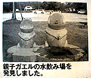
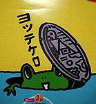
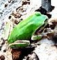

|
滋賀県でもカエル水飲み場！彦根町で初の親子バージョン！ 【福岡発=天神勤め人様】オレンジページ８月２日号を見ていてびっくりしました。滋賀県彦根町で親子カエルの水飲み場発見の報告があったからです。コメントによると『旭町の風車村の近くで発見』して、オレンジページに投稿したそうです。これからはカエル新聞に投稿するようにしてほしいですねー
親子タイプ出現で謎深まる【全国かえる奉賛会】平成１０年6月28日号で特集したカエル水飲み場が全国的に分布していることは知っていたが、新たなバリエーションが加わっていることが、今回の発見報告であきらかになった。ということは、全国の公共場所に設営するカエル水飲み場をデザインしている人は、バリエーションタイプの設計も始めたということだ。 カエル水飲み場デザイナーは、至急、かえる新聞に名乗り出てクレーっ！  福岡市下水道キャラにカエル！【福岡発=げこげこ大王７世直筆】福岡市水道局のポスターにカエルが使われていることは知られているが、今度は下水道にもキャラクターとして採用された。マンホールのふたからこちらをのぞいているカエルが楽しいポスターである。
 マンション２階にカエル！【日本発=順司様】暑中見舞。 毎年我が家(マンシヨン２階)にホームステイのカエルです。【全国かえる奉賛会】アマガエルは可愛いのう。大王もこどもの頃、夕方になると連れだって庭にやってくるアマガエルがいて、喜んでいた。マンションの２階にまでやってくるなんて、きっとその家には、よいことがたくさんあるであろーっ！ 
カエルサボテン第３期発売迫る！【けろテン市場】過去２回の売り出しがすべて即日完売という伝説を作っている、カエルサボテンの第３期発売が間近に迫っている。今回は、通常のサボテンスタイルとともに、こどもサボテンや携帯ストラップもあるそうだ。そして、ポストカード４枚組みが完成したそうなので、けろテン市場の告知を見逃さないように注意しよう。 カエルキャラの総合販売サイト出現!【大阪発=JUN-Z同志記者】かえるキャラをデザインした総合販売サイトが誕生しました。ぜひ遊びに来て下さい。カエルＴシャツ、カエルうちわ、カエルのポストカード、カエルのマグカップ、カエルのポケステ、カエルのi-modeの待ち受け画面など多彩なカエルグッズを展開しています。【全国かえる奉賛会】品揃えの多彩さでは、全国最大のカエルデザインWEBショップであろうか。みんなででかけてみよう！ 白色のトノサマガエルを発見!【大阪発=JUN-Z同志記者】某非カエル系マスコミの報道によると、静岡県大東町の水田で白色のトノサマガエルが見つかったそうです。突然変異で色素がすべて抜けた珍しい個体という。kerokerokero+++今週のカエル便り+++kerokerokero 【レディ・ミカエル同志】「かようびのよる」と言う絵本を知っていますか？火曜日の夜更け、一斉に大量のカエル達がハスの葉っぱにのって大空を飛び回り、町に大挙して押し寄せると言う実に素晴らしい物語です。美しく、ウィットの効いた絵本です。 作絵・デヴィット・ウィーズナー◆訳・当麻ゆか◆徳間書店・￥１４００
【大王返信】映画マグノリアでは、空からカエルが降ってくるのだったが、これは飛ぶんですねー。美しい画像の絵本でした。書店に行って現物を手にしてみます！
kerokerokero+++今週のカエル便り+++kerokerokero
投稿採用者に武功カエル徽章を授与！ |
かえる古新聞過去に取り上げた記事を見出し付きで一覧したい人は、ここをクリック◆創刊号を見る◆先週号を見る◆話題の号を見る◆かえる新聞の昔を読む
|
私も入っています。。全国かえる奉賛会
大王様に会うには、このバナーをクリック。ずっと奥に写真館があるぞ。全国かえる奉賛会に入会するには、自分のホームページのどこかに、下の部分を追加するとバナーがリンク付きで表示されるぞ。どんどん入会しましょー |


|